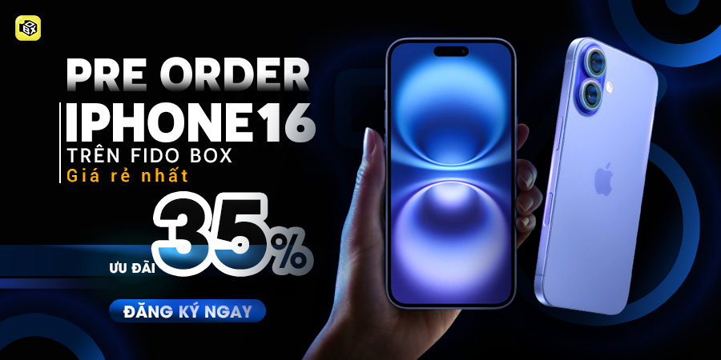
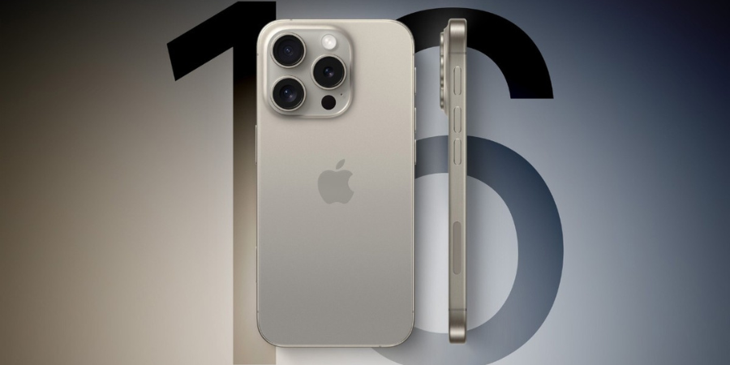
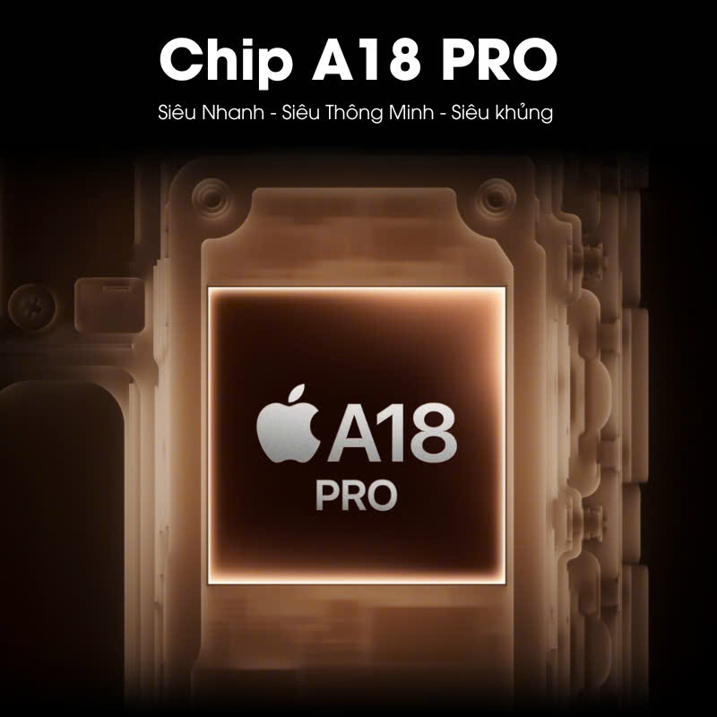
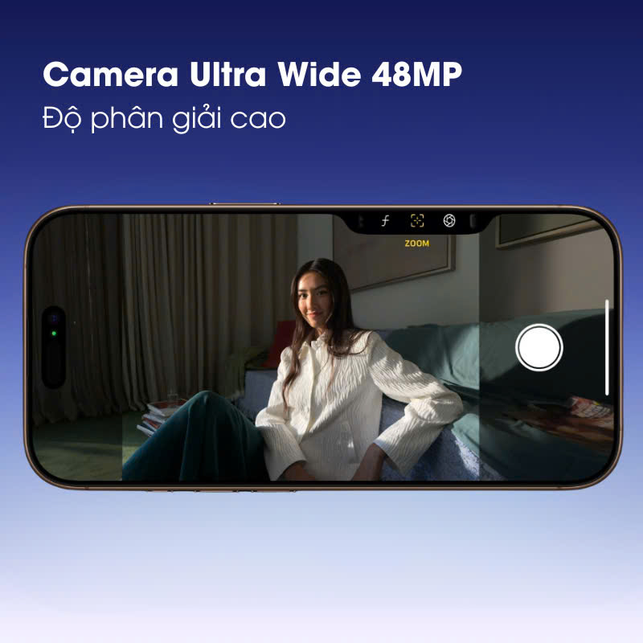
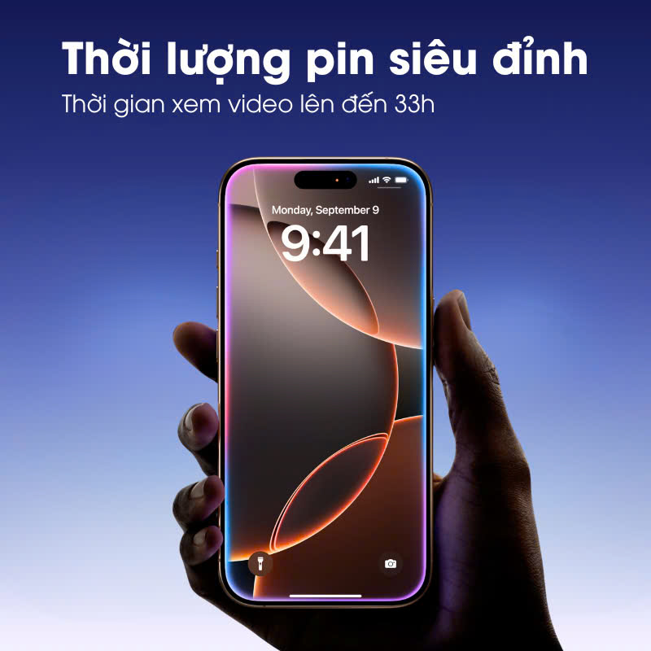

Iphone 16 Pro Max có gì mới? Khám phá các tính năng đột phá đáng chú ý
Khám phá iPhone 16 Pro Max có gì mới với các tính năng đột phá đáng chú ý trong năm 2024. Từ thiết kế sang trọng, màn hình tinh tế, đến hiệu suất mạnh mẽ và công nghệ tiên tiến, iPhone 16 Pro Max mang đến trải nghiệm vượt trội cho người dùng. Cùng "TLH Tech" tìm hiểu ngay các nâng cấp nổi bật và các tính năng thông minh sẽ làm bạn không thể rời mắt khỏi siêu phẩm này qua bài viết dưới đây nhé.
1. Iphone 16 Pro Max có gì mới so với các phiên bản trước?
iPhone 16 Pro Max đã nhanh chóng thu hút sự chú ý từ giới công nghệ nhờ những cải tiến vượt bậc, tiếp tục khẳng định vị thế của Apple trong phân khúc smartphone cao cấp. Vậy iPhone 16 Pro Max có gì mới so với các phiên bản trước? Hãy cùng khám phá những nâng cấp đáng giá từ thiết kế, màn hình đến hiệu suất của siêu phẩm này.
Thiết kế mới và chất liệu cao cấp hơnMột trong những điểm nổi bật nhất của iPhone 16 Pro Max chính là thiết kế mới đầy tinh tế và sang trọng. Theo các tin đồn, Apple có thể sẽ sử dụng khung viền titan cho sản phẩm, giúp máy nhẹ hơn nhưng vẫn giữ được độ bền vượt trội. Bên cạnh đó, thiết kế viền màn hình mỏng hơn mang lại trải nghiệm hình ảnh toàn màn hình ấn tượng hơn cho người dùng. Ngoài ra, iPhone 16 Pro Max còn được giới thiệu với nhiều tùy chọn màu sắc mới lạ, đáp ứng sở thích cá nhân hóa của từng người dùng.
Cải tiến về màn hình và công nghệ hiển thị
iPhone 16 Pro Max cũng ghi điểm với nâng cấp về màn hình đáng chú ý. Được trang bị màn hình OLED độ phân giải cao, iPhone 16 Pro Max hứa hẹn mang lại chất lượng hiển thị sắc nét, sống động. Tần số quét 120Hz cùng công nghệ HDR10+ không chỉ nâng cao trải nghiệm xem video, chơi game mà còn cải thiện khả năng xử lý các tác vụ đa nhiệm mượt mà hơn. Điều này giúp iPhone 16 Pro Max trở thành một trong những smartphone có màn hình đẹp và hiện đại nhất trên thị trường.
Hiệu suất mạnh mẽ với chip A18 BionicTMột trong những yếu tố quan trọng tạo nên sức mạnh của iPhone 16 Pro Max chính là chip A18 Bionic. Đây là con chip mới nhất của Apple, mang lại hiệu suất vượt trội, giúp cải thiện tốc độ xử lý, đồ họa và tiết kiệm năng lượng hơn so với chip A17 ở phiên bản trước. Nhờ công nghệ tiên tiến, iPhone 16 Pro Max không chỉ xử lý mượt mà các ứng dụng nặng, mà còn kéo dài thời lượng pin, mang lại trải nghiệm sử dụng bền bỉ suốt cả ngày.
Bên cạnh đó, iPhone 16 Pro Max còn có bước đột phá lớn trong lĩnh vực nhiếp ảnh di động với camera chính 48MP, cảm biến lớn hơn, và khả năng quay video 8K, cho phép người dùng chụp và quay với chất lượng chuyên nghiệp.
2. Giá bán và các phiên bản bộ nhớ của Iphone 16 Pro Max
Sự kiện ra mắt iPhone 16 vào ngày 10/09 đã mang đến nhiều thông tin thú vị, bao gồm cả giá bán chính thức được công bố trên website của Apple. Iphone 16 Pro Max có mức giá tương tự các phiên bản tiền nhiệm, tuy nhiên có thể cao hơn do những cải tiến vượt trội.
3. Những Tính Năng Mới Của iPhone 16 Pro Max Hỗ Trợ Công Nghệ AI Và AR
iPhone 16 Pro Max không chỉ nổi bật với thiết kế và hiệu suất vượt trội mà còn tích hợp những tính năng công nghệ tiên tiến về trí tuệ nhân tạo (AI) và thực tế tăng cường (AR), mang lại trải nghiệm sử dụng hoàn toàn mới cho người dùng. Với sự phát triển mạnh mẽ của các công nghệ này, iPhone 16 Pro Max đã tạo ra bước đột phá trong việc hỗ trợ thông minh và tương tác thực tế ảo.
Trí tuệ nhân tạo (AI) cải thiện trải nghiệm người dùngSiri, trợ lý ảo của Apple, được tích hợp AI thông minh hơn, không chỉ phản hồi nhanh chóng mà còn hiểu ngữ cảnh tốt hơn, đưa ra các gợi ý phù hợp. Ngoài ra, tính năng nhận diện khuôn mặt Face ID cũng được cải tiến, cho phép nhận diện nhanh và chính xác hơn ngay cả trong điều kiện ánh sáng yếu.
Khả năng đa nhiệm và cải tiến trên hệ điều hành iOS 18Với sự ra mắt của iOS 18, iPhone 16 Pro Max đã cải thiện khả năng đa nhiệm, cho phép người dùng chạy nhiều ứng dụng cùng lúc một cách mượt mà. iOS 18 không chỉ tối ưu hóa việc quản lý tài nguyên, giúp tiết kiệm pin và tăng tốc độ xử lý, mà còn mang đến giao diện trực quan hơn. Người dùng có thể dễ dàng chuyển đổi giữa các ứng dụng, đồng thời trải nghiệm các tính năng mới như Widgets động và tính năng chia màn hình, giúp tăng hiệu suất làm việc và giải trí
Ứng dụng thực tế tăng cường (AR) mạnh mẽ hơn
Công nghệ AR trên iPhone 16 Pro Max đã được nâng cấp đáng kể, cho phép người dùng trải nghiệm các ứng dụng và trò chơi thực tế ảo với độ chính xác và mượt mà hơn. Điều này đặc biệt hữu ích trong các ứng dụng giáo dục, khi học sinh có thể tương tác với các mô hình 3D ngay trên màn hình.
Với những cải tiến mạnh mẽ trong AI và AR, iPhone 16 Pro Max không chỉ là một thiết bị thông minh, mà còn là công cụ mạnh mẽ giúp người dùng tận hưởng các công nghệ tiên tiến nhất hiện nay. Từ việc tương tác với Siri thông minh hơn, đến trải nghiệm thực tế ảo ấn tượng, iPhone 16 Pro Max thực sự nâng tầm trải nghiệm người dùng.
Ngày:14/09/2024